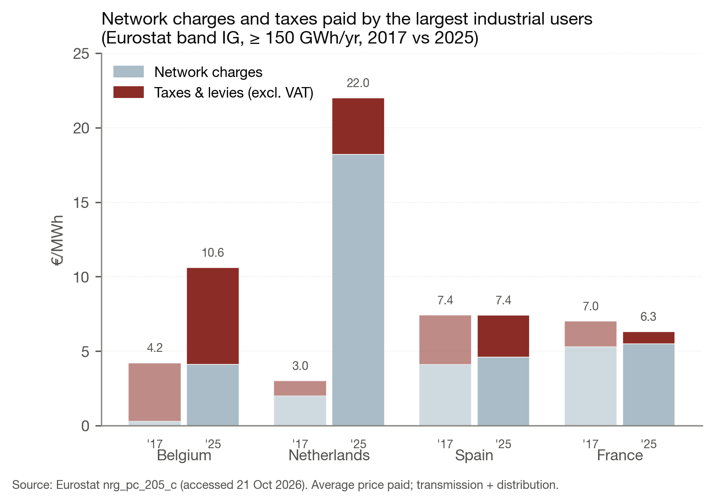
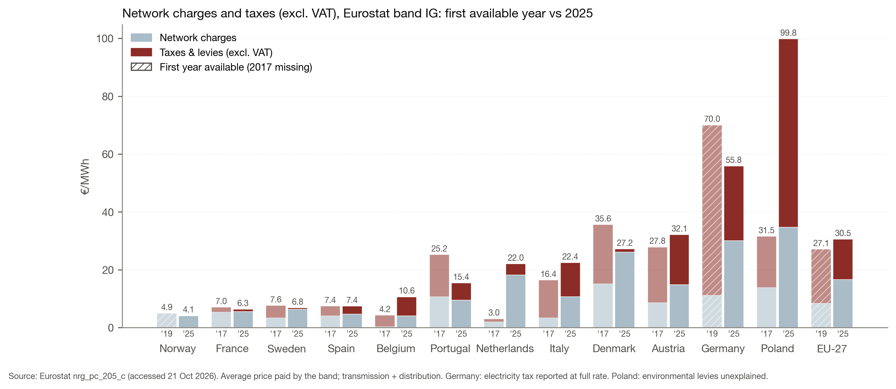
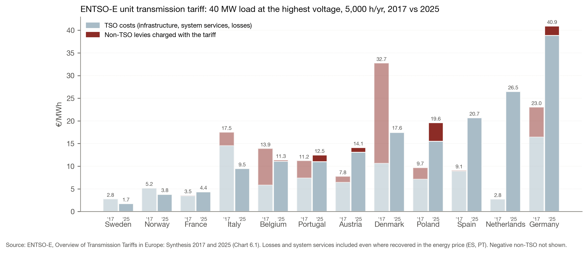
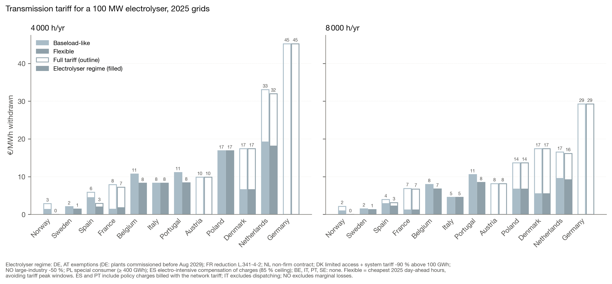
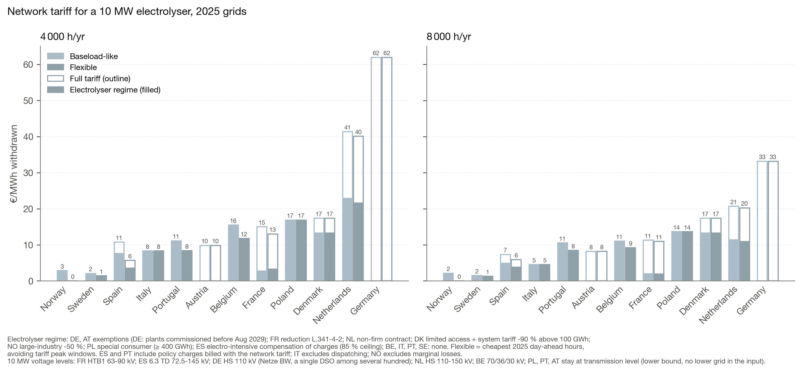
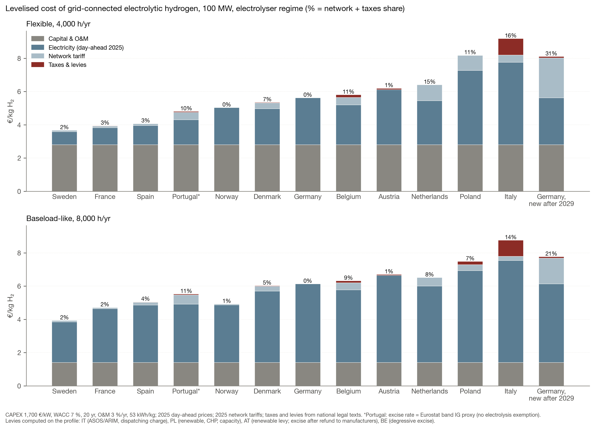

Ce que paie un électrolyseur pour accéder au réseau électrique en Europe
Le tarif d'accès au réseau (en France le TURPE) et les taxes qu'un gros consommateur, ici un électrolyseur, paie en France, en Espagne, en Allemagne et aux Pays-Bas. Chaque nombre dit son périmètre (transport seul ou avec la distribution, tension, profil de consommation, année, avant ou après exonération) et son statut : lu dans la source ou calculé.
Cette note accompagne le thème
Economie/Tarifs_reseau_Europe, ouvert le 21/10/2026. Il
fallait vérifier une diapositive d’Hydrogen Europe (non publique) :
réseau et taxes y auraient augmenté de 450 % aux Pays-Bas depuis 2017.
Il fallait aussi donner à l’étude Valeur du pipe H2
(pommes_studies, DGEC) un coût de réseau par nœud, FR, ES et DE. Chaque
nombre porte son périmètre (transport seul ou transport + distribution,
tension, profil, année, avant ou après exonération) et son statut :
vérifié (lu dans la source), calculé
(par un script du thème, à partir de valeurs vérifiées) ou lu
sur tableau (tableaux ENTSO-E extraits par coordonnées).
1. En sept phrases
- La figure d’Hydrogen Europe est une statistique Eurostat. Il s’agit
du jeu
nrg_pc_205_c, tranche IG (≥ 150 GWh/an), réseau et taxes hors TVA, et ses totaux 2025 se retrouvent à 0,2 €/MWh près (vérifié). C’est un prix moyen payé par les plus gros industriels, transport et distribution mêlés. Ce n’est pas le tarif d’un électrolyseur. - La hausse néerlandaise est réelle, mais le pourcentage ne veut rien dire. En 2017, les Pays-Bas déclarent à Eurostat au 1 €/MWh près (réseau 2, taxes 1), si bien que « +450 % » ou « +633 % » ne dépend que de l’arrondi. Le fait robuste : le tarif de transport de référence d’ENTSO-E passe de 2,75 à 26,5 €/MWh, soit un facteur 9,6. Le saut date de 2024, l’année où l’ACM a supprimé la volumecorrectieregeling, rabais qui pouvait atteindre 90 % pour les gros consommateurs stables.
- Au tarif plein, un électrolyseur de 100 MW raccordé en très haute tension paie en 2025, d’après les grilles des gestionnaires (calculé), de 0 à 3 €/MWh en Norvège et en Suède, 3 à 6 en Espagne, 7 à 8 en France, 4 à 11 en Italie, en Autriche, en Belgique et au Portugal, 14 à 17 en Pologne et au Danemark, 16 à 33 aux Pays-Bas et 29 à 45 en Allemagne. Le cas de référence d’ENTSO-E (40 MW, 5 000 h) retrouve l’UTT à 0,4 €/MWh près dans les huit pays où les périmètres coïncident.
- Les régimes propres à l’électrolyse renversent ce classement. L’Allemagne exonère réseau, prélèvements et taxe sur l’électricité, donc 0 €/MWh, mais seulement pour les installations mises en service avant août 2029 (réseau) et avant 2030 (prélèvements). L’Autriche exonère le tarif de réseau 15 ans dès 1 MW (ElWOG § 111 (3)). L’ElWG de décembre 2025 garde cette exonération pour les installations antérieures et la remplace par une exonération de 20 ans des stockages « systemdienlich ». La France abat son TURPE de 74 à 81 % (0,8 à 1,9 €/MWh) et met l’accise à zéro. Ailleurs, l’électrolyseur ne profite que de dispositifs de droit commun : contrat non ferme aux Pays-Bas, accès limité et systemtarif réduite au Danemark, « gros industriel » en Norvège, statut d’électro-intensif en Espagne.
- Sous les régimes actuels les plus favorables, réseau et taxes pèsent 0 à 16 % du coût de l’hydrogène (calculé). Ce poste grimpe à 31 % pour un électrolyseur allemand flexible mis en service après 2029, privé de ses exemptions (17 % avec la subvention de la grille 2026).
- Entre les douze pays, réseau et taxes font un écart de 27 €/MWh pour un électrolyseur flexible, de l’Allemagne exonérée à l’Italie et à son corrispettivo mercato capacità. L’écart de prix de gros payé est environ trois fois plus grand (79 €/MWh, de la Suède à l’Italie). Le prix de gros reste donc le premier facteur de localisation. Mais un électrolyseur allemand mis en service après 2029 paierait 22 à 47 €/MWh de plus, soit 1,2 à 2,5 €/kg, ce qui suffit à renverser l’avantage.
- La taxe sur l’électricité varie moins qu’il n’y paraît. Huit pays sur douze exonèrent l’électrolyse (lu dans chaque loi), l’Espagne la taxe sur 15 % de sa base, et l’Autriche et le Danemark la ramènent au minimum européen de 0,5 €/MWh. Seul le Portugal la taxe pleinement, à 1,00 €/MWh.
2. La figure d’Hydrogen Europe, refaite à partir de sa source

Le profil n’était pas dit. En confrontant les huit tranches non
domestiques d’Eurostat aux étiquettes de la diapositive, seule la
tranche IG (≥ 150 GWh/an) convient, avec réseau (NETC) plus
taxes et prélèvements hors TVA. En 2025 : BE 4,1 + 6,5
= 10,6 €/MWh, NL 18,2 + 3,8 = 22,0, ES 7,4 (la diapositive dit 7,6), FR
6,3 (6,2). Le script plot_evolution.py en fait une
assertion.
En 2017, seule la France tombe juste (7,0). Le millésime actuel d’Eurostat donne BE 4,2 (3,8 sur la diapositive), NL 3,0 (3,9) et ES 7,4 (5,6). Ce sont des révisions de la base, ou une extraction plus ancienne : on ne peut pas trancher.
Trois réserves tiennent à la nature de la statistique :
NETCmêle transport et distribution au prorata des clients de la tranche, et il est déclaré après les réductions quand le pays les intègre au prix ;- les taxes sont celles du client moyen. L’Allemagne déclare la Stromsteuer au taux plein de 20,5 €/MWh, alors que l’industrie n’en paie que 0,5 et l’électrolyse rien. La Pologne déclare 46 €/MWh de « taxes environnementales » en tranche IG, que rien n’explique (non établi) ;
- les Pays-Bas déclarent en 2017-2019 des composantes entières au 1 €/MWh : réseau 2, taxes 1. La série néerlandaise de la tranche IG s’écrit, réseau puis taxes en €/MWh : 2 et 1 (2017-2019), 3,8 et 2,8 (2020), 8,3 et 2,6 (2023), 18,6 et 2,5 (2024), 18,2 et 3,8 (2025). Le saut est en 2024.

3. Le tarif de transport harmonisé d’ENTSO-E, 2017-2025
ENTSO-E calcule chaque année un « tarif unitaire de transport » (UTT) pour un client fictif de 40 MW raccordé en 400-330 kV, 5 000 h/an (Synthesis 2025, § 3). Il inclut l’infrastructure, les services système et les pertes, même quand le pays les recouvre dans le prix de l’énergie : en Espagne, 16 des 20,7 €/MWh de 2025 sont des services système estimés, et l’infrastructure n’en fait que 3,2 (Chart 7.6). C’est une grandeur de comparaison, pas une facture.

| €/MWh, total au plus haut niveau | 2017 | 2019 | 2023 | 2024 | 2025 |
|---|---|---|---|---|---|
| Pays-Bas | 2,75 | 3,81 | 12,9 | 28,8 | 26,5 |
| Allemagne | 23,0 | 22,5 | 21,3 | 44,7 | 40,9 |
| Belgique | 13,9 | 17,3 | 5,2 | 6,8 | 11,3 |
| Espagne | 9,1 | 9,3 | 17,3 | 17,4 | 20,7 |
| France | 3,5 | 3,4 | 3,4 | 3,8 | 4,4 |
| Suède | 2,8 | 3,4 | 2,5 | 1,7 | 1,7 |
| Norvège | 5,2 | 6,3 | — | 4,0 | 3,8 |
Statut : lu sur tableau (extract_entsoe.py, 1 640
valeurs, cinq éditions). La sensibilité à la durée d’utilisation (Chart
7.4, 2024 et 2025) montre que le tarif néerlandais est purement «
puissance ». Il vaut 77 €/MWh à 2 000 h, 31 à 5 000 h et 18 à 8 760 h :
un électrolyseur peu utilisé y est lourdement pénalisé. Le tarif
français, presque tout « énergie » en 400 kV, ne bouge pas.
4. Ce que paie un électrolyseur : le calcul par les grilles
tarif_profils.py facture heure par heure, sur le
calendrier 2025, un profil de soutirage avec la grille 2025 de chaque
gestionnaire, saisie page par page dans
saisie/grilles_tarifaires.csv en devise d’origine, puis
convertie au taux moyen 2025 d’Eurostat (SEK 11,07, NOK 11,72, DKK 7,46,
PLN 4,24 pour 1 €). Deux profils sont comparés :
- non piloté : heures réparties régulièrement sur l’année ;
- flexible : les heures les moins chères du day-ahead 2025 de la zone (Energy-Charts : IT-Nord, SE3, NO2, DK1, PT, AT, PL, NL), hors fenêtre de pointe tarifaire.
La version tarifaire retenue est la moins chère, et les souscriptions sont égales aux pointes.

| 100 MW THT, €/MWh (calculé) | 4 000 h non piloté | 4 000 h flexible | 8 000 h non piloté | 8 000 h flexible | Régime électrolyseur |
|---|---|---|---|---|---|
| Norvège (Statnett, NO2) | 2,9 | 0 | 2,2 | 0 | 0-1,4 (gros industriel) |
| Suède (Svenska kraftnät, SE3) | 2,1 | 1,5 | 1,5 | 1,3 | aucun |
| Espagne (6.4 TD, péage + cargos) | 5,9 | 2,9 | 4,0 | 3,1 | 2,1-4,6 (électro-intensif) |
| France (HTB 2, 225 kV) | 7,9 | 7,2 | 6,9 | 6,7 | 1,3-1,9 (L. 341-4-2) |
| France (HTB 3, 400 kV, 300 MW) | 4,1 | 4,1 | 4,1 | 4,1 | 0,8-1,1 |
| Italie (Terna, TRAS) | 8,3 | 8,3 | 4,5 | 4,5 | aucun |
| Autriche (APG, Netzebene 1) | 9,9 | 9,9 | 8,2 | 8,2 | 0 (ElWOG § 111 (3)) |
| Belgique (Elia 380-110 kV) | 10,8 | 8,3 | 8,0 | 6,8 | aucun |
| Portugal (MAT, acesso às redes) | 11,1 | 8,4 | 10,6 | 8,5 | aucun (électro-intensif suspendu) |
| Pologne (PSE) | 16,9 | 16,9 | 13,7 | 13,7 | 6,8 à 8 000 h (odbiorca specjalny) |
| Danemark (Energinet) | 17,4 | 17,4 | 17,4 | 17,4 | 5,6-6,7 (accès limité) |
| Pays-Bas (TenneT EHS) | 33,1 | 32,0 | 16,5 | 16,2 | contrat non ferme : 9-19 |
| Allemagne (HÖS) | 45,2 | 45,2 | 29,3 | 29,3 | 0 (§ 118 (6) EnWG) |
À 10 MW, le site est raccordé à un niveau inférieur : 6.3 TD en Espagne (72,5-145 kV), HS 110 kV en Allemagne (Netze BW — un seul GRD saisi parmi plusieurs centaines, ce n’est pas une médiane nationale), HTB 1 en France (63-90 kV), HS 110-150 kV aux Pays-Bas, 70/36/30 kV en Belgique. La Pologne (110 kV), le Portugal (AT) et l’Autriche (NE3) restent au niveau transport, faute de grilles plus basses dans la saisie : leurs valeurs à 10 MW sont des bornes basses. En Allemagne, la grille du GRD n’a pas de système mensuel dans la saisie : seul le système annuel est gardé (la version de la facture l’écrit).

| 10 MW, €/MWh (calculé) | 4 000 h non piloté | 4 000 h flexible | 8 000 h non piloté | 8 000 h flexible | Régime électrolyseur |
|---|---|---|---|---|---|
| Norvège (Statnett, NO2) | 2,9 | 0 | 2,2 | 0 | 0-2,9 (pas de -50 % sous 15 MW) |
| Suède (Svenska kraftnät, SE3) | 2,1 | 1,5 | 1,5 | 1,3 | aucun |
| Espagne (6.3 TD, 72,5-145 kV, péage + cargos) | 10,8 | 5,7 | 7,4 | 5,9 | 3,7-7,8 (électro-intensif, plafond 85 % des cargos) |
| Italie (Terna, TRAS) | 8,3 | 8,3 | 4,5 | 4,5 | aucun |
| Portugal (MAT, borne basse) | 11,1 | 8,4 | 10,6 | 8,5 | aucun (électro-intensif suspendu) |
| Autriche (NE1, borne basse) | 9,9 | 9,9 | 8,2 | 8,2 | 0 (ElWOG § 111 (3)) |
| Belgique (Elia 70-30 kV) | 15,5 | 11,8 | 11,1 | 9,2 | aucun |
| France (HTB 1, 63-90 kV) | 15,0 | 13,0 | 11,3 | 11,0 | 2,1-3,4 (L. 341-4-2) |
| Pologne (PSE, borne basse) | 16,9 | 16,9 | 13,7 | 13,7 | aucun à 10 MW (odbiorca specjalny exige ≥ 400 GWh) |
| Danemark (Energinet) | 17,4 | 17,4 | 17,4 | 17,4 | 13,4 (accès limité ; -90 % sur la systemtarif exige > 100 GWh) |
| Pays-Bas (TenneT HS, 110-150 kV) | 41,4 | 40,1 | 20,7 | 20,3 | contrat non ferme : 11,1-23,0 |
| Allemagne (Netze BW, HS 110 kV) | 62,0 | 62,0 | 33,2 | 33,2 | 0 (§ 118 (6) EnWG) ; abattu de droit commun : 12,4 (flexible 4 000 h, usage atypique) à 3,3 (8 000 h, Bandlast 90 %) |
Les périmètres ne sont pas tous les mêmes.
- Espagne et Portugal : le tarif comprend les charges de politique énergétique facturées avec lui (cargos en Espagne, CIEG dans la tarifa de Acesso às Redes au Portugal).
- Italie : sans le corrispettivo di dispacciamento, payé au titre du contrat de dispatching. Il est compté avec les prélèvements (§ 5) : 8,5 à 9,2 €/MWh en 2025.
- Norvège : sans les pertes marginales, facturées chaque semaine par point et de signe variable.
Recoupement avec ENTSO-E
(data/recoupement_entsoe.csv). La grille facture le cas de
référence d’ENTSO-E (40 MW, 5 000 h, réparti sur l’année) et on le
compare à l’UTT 2025 au plus haut niveau (calculé contre lu sur tableau,
€/MWh) :
- Même périmètre, écart de 0,3 €/MWh au plus :
- DE 38,85 contre 38,85, NL 26,48 contre 26,48 ;
- FR 4,18 contre 4,36, PL 15,60 contre 15,48 ;
- PT 10,92 contre 10,99, SE 1,86 contre 1,73 ;
- DK 17,42 contre 17,45 ;
- NO 3,45 contre 3,80, sans les pertes.
- Écarts expliqués par le périmètre :
- IT 6,8 contre 9,5 : ENTSO-E ajoute 1,9 de services système ;
- AT 9,2 contre 13,1 : ENTSO-E compte 3,3 de pertes et 0,8 de services système payés par les injecteurs ;
- BE 9,7 contre 11,1 : pertes compensées en nature ;
- ES 5,1 contre 20,7 : 16 de services système estimés, payés dans le prix de l’énergie.
Ces recoupements sont des assertions du script.
Recoupement avec E-Bridge 2026
(recoupement_ebridge.py,
data/recoupement_ebridge.csv). Le benchmark du ministère
néerlandais (E-Bridge, 12/06/2026) chiffre le réseau de deux profils
raccordés au transport. Le profil A est un ruban de 1 TWh/an à 125 MW.
Le profil B est un électrolyseur de 250 MW, à 100 % de 0 h à 6 h et de
11 h à 17 h, à 10 % sinon, soit 4 818 h. Nos grilles les facturent ; on
compare au tarif de réseau 2026 du rapport, avant et après réductions
(calculé contre vérifié, €/MWh) :
- Même grille, même résultat :
- DE A 13,53 et 1,35 après § 19 (2), comme E-Bridge ;
- FR A 4,12 contre 4,11, puis 0,78 après l’abattement de 81 % ;
- FR B 4,11, puis 1,07 après l’abattement anticyclique de 74 %, comme E-Bridge ;
- BE A 8,07 contre 8,08 (colonne 2026 d’Elia, saisie pour l’occasion) ;
- NL A 14,50 contre 14,58 et NL B 22,92 contre 23,04. L’écart est la redevance périodique de raccordement, hors de notre périmètre.
- Deux erreurs d’E-Bridge sur l’électrolyseur :
- DE B 17,91 contre 20,17 au tarif plein. E-Bridge divise le terme de puissance (53,06 €/kW × 250 MW) par 1 TWh au lieu de 1,2 TWh. Sans effet sur le résultat, qui est nul des deux côtés après l’exonération.
- BE B 8,09 contre 10,16. E-Bridge facture la pointe annuelle à 250 MW. Sa propre définition de cette pointe (p. 38) tombe pourtant de 17 h à 20 h, quand son profil tourne à 25 MW. La différence fait 2,06 €/MWh.
- Écarts de périmètre et d’année :
- ES : notre « réseau » compte les cargos, qu’E-Bridge range dans les prélèvements. Surtout, un décret-loi de mars 2026 (RDL 7/2026, art. 7) réduit de 80 % les péages des électro-intensifs, pour 2026 seulement. Péages 2026 seuls, notre calcul donne 3,62 contre 3,63 pour B, et 0,72 contre 0,73 après réduction. Pour A, il reste 0,19 €/MWh d’écart sur le terme d’énergie, non expliqué.
- SE : E-Bridge place les gros consommateurs en SE1, où le terme de pertes devient un crédit (−2,75 pour A). Notre grille est la médiane de SE3, où il est un débit (1,51).
- Ce qu’E-Bridge ne regarde pas : le contrat non ferme néerlandais, qui ramène l’électrolyseur à 9-19 €/MWh dans notre calcul.
Le régime espagnol de 2026 est un fait nouveau pour cette note. En 2026, un électrolyseur électro-intensif paie ses péages à 20 %, en plus de la compensation des cargos. Le tableau du § 4 reste celui des grilles 2025.
Contrôles.
- France : le ruban de 1 MW en HTB 2 longue utilisation donne 6,75 €/MWh. Indexé comme la grille 2030 de la note TURPE 7 d’Anaelle_replay, il donne 7,47 €/MWh, contre 7,48 dans cette note (assertion).
- Calendriers : les heures de l’opłata mocowa (3 765 h), des HLZF de TenneT (1 412 h) et du super vazio portugais (1 460 h) sont décomptées par assertion.
- Prix : la série IT-Nord d’Energy-Charts retrouve celle de Marches_electricite.
Les dispositifs, pays par pays (vérifiés dans les textes, sauf mention) :
- France. Abattement de l’art. L. 341-4-2 (décret
2021-420) :
- 81 % pour un profil stable (≥ 7 000 h, > 10 GWh) ;
- 76 % pour un grand consommateur (> 500 GWh, 40-44 % en heures creuses) ;
- 74 % pour un profil anticyclique (≥ 44 % en heures creuses).
- Allemagne.
- Électrolyse : exonération de 20 ans du tarif de réseau pour les installations mises en service avant le 4/8/2029 (§ 118 (6) EnWG).
- Hors électrolyse, deux réductions du § 19 (2) StromNEV :
- « Bandlast » ≥ 7 000 h (Satz 2) : tarif ramené à 20, 15 ou 10 % du publié ;
- usage atypique (Satz 1, et non § 19 (1) comme l’écrivait la version précédente de cette note) : la puissance est facturée sur la pointe dans les fenêtres de forte charge du GRT (HLZF de TenneT 2025 : hiver 8 h 30-13 h 30 et 15 h 15-20 h 15, automne 10 h 15-20 h 15, jours ouvrés), sans descendre sous 20 % du publié. Un électrolyseur flexible qui évite ces fenêtres paie 13,3 €/MWh au lieu de 45,2. Au niveau HS d’un GRD (10 MW, Netze BW), le seuil de significativité est de 500 kW, pas 100 kW : 12,4 €/MWh au lieu de 62,0.
- Ces deux réductions expirent avec la StromNEV fin 2028 (BNetzA, Orientierungspunkte du 22/4/2026, p. 17). Un électrolyseur neuf après 2029 n’y a pas droit.
- En 2026, une subvention fédérale de 6,5 Md€ (§ 24c EnWG) baisse le tarif de transport de 58 % (127,74 puis 53,06 €/kW/an).
- Le profil flexible allemand évite désormais les HLZF. Cela renchérit de 3 €/MWh le prix de gros qu’il paie (53,2 contre 50,2).
- Pays-Bas.
- La grille TenneT est celle du dictum des Tarievenbesluiten de l’ACM
(tabel 2) :
- 2025 : 54,99 €/kW/an sur la puissance contractée et 7,14 €/kW/mois sur la pointe mensuelle pondérée, plus 12 479 €/an de vastrecht ;
- 2024 : 60,65 et 6,91 ;
- 2026 : 49,28 et 6,17.
- Plus de rabais de volume depuis le 1/1/2024 (ACER 2025, p. 63).
- Un contrat non ferme dispense de la part « puissance contractée ».
- La grille TenneT est celle du dictum des Tarievenbesluiten de l’ACM
(tabel 2) :
- Belgique. Aucun dispositif propre aux gros consommateurs ni à l’électrolyse dans le tarif de transport (ENTSO-E 2025, annexe 8).
- Espagne.
- Statut d’électro-intensif (RD 1106/2020, texte consolidé). Conditions : plus de 1 GWh/an, au moins 50 % en période P6, secteur de l’annexe ; les gaz industriels (CNAE 2011) sont « en risque significatif ».
- Effet : compensation ex post jusqu’à 85 % des cargos de soutien aux renouvelables, à la cogénération et aux territoires non péninsulaires (art. 20.4). Les deux profils remplissent le critère P6 (53-58 %).
- Le calcul applique le plafond de 85 % : c’est une borne basse du coût. L’aide dépend d’appels annuels et d’un ratio cargos / valeur ajoutée.
- Italie.
- Tarif de transmission (ARERA, délibération 579/2024, tabelle 3) : 30,26 €/kW/an sur la pointe mensuelle, plus 0,76 €/MWh. Rien de propre à l’électrolyse.
- Les aides vont aux oneri generali (§ 5).
- Autriche.
- Tarif de transport d’APG (Preisblatt 2025) : 13,50 €/kW/an sur la moyenne des pointes mensuelles, plus 6,49 €/MWh (énergie et pertes).
- Les installations P2X d’au moins 1 MW ne payaient ni Netznutzungs- ni Netzverlustentgelt pendant 15 ans (ElWOG 2010 § 111 (3)), ni frais de raccordement (§ 54 (6), § 55 (10)).
- L’ElWOG est abrogé depuis le 24/12/2025, mais l’ElWG qui le remplace (BGBl. I Nr. 91/2025, texte adopté) garde son § 111 (3) pour les installations mises en service, ou dont le chantier a été déclaré, avant sa publication du 23/12/2025 (§ 188 (1)).
- Pour les suivantes, l’ElWG exonère les stockages de Netznutzungs- et Netzverlustentgelt pendant 20 ans, « unter Berücksichtigung des systemdienlichen Betriebs » (§ 127 (3)). Sa définition du stockage couvre la conversion en un vecteur stockable utilisé « als einen anderen Energieträger » (§ 6 Z 39). Un électrolyseur qui vend son hydrogène comme combustible y entre, mais pas forcément s’il le vend comme matière première. Les conditions de « systemdienlich » sont laissées aux règlements de l’E-Control, pas encore pris.
- Pologne.
- Taryfa PSE 2025 : 8 888 PLN/MW/mois sur la puissance contractée, plus 12,21 et 31,88 PLN/MWh (stawka jakościowa).
- Un « odbiorca specjalny » (≥ 400 GWh/an, ≥ 50 % d’utilisation, électricité ≥ 15 % de la valeur de production) ne paie que 10 % de la stawka jakościowa. Le texte retient la consommation de 2023 : un site neuf en est exclu la première année.
- Portugal.
- Tarifa de Acesso às Redes en MAT (ERSE, tarifs 2025, Quadro 3-27) : puissance en heures de pointe et puissance contractée, en €/kW/jour, plus énergie par période.
- Le statut d’électro-intensif (75 ou 85 % des CIEG) attend toujours l’accord de la Commission. Il n’est donc pas appliqué.
- Suède.
- Svenska kraftnät facture la puissance souscrite et des pertes au prix spot. Médiane des 59 points de SE3 : 50 SEK/kW/an, coefficient de pertes de -2 %.
- Rien de propre à l’électrolyse.
- Norvège.
- Le fastledd de Statnett porte sur le soutirage pendant l’heure de pointe du système : 6/1/2025 à 16 h, 23,4 GW d’après Energy-Charts. Le taux est de 270 kr/kW jusqu’au 30/6/2025, puis de 135 kr/kW.
- Les gros industriels (> 15 MW, > 100 GWh/an) paient moitié.
- Un électrolyseur qui ne tourne pas à cette heure ne paie rien (hypothèse du profil flexible).
- Danemark.
- Energinet ne facture que de l’énergie : nettarif de 5,6 øre/kWh avec transformateur propre et systemtarif de 7,4 øre/kWh.
- La systemtarif est réduite de 90 % au-delà de 100 GWh/an.
- L’accès limité (begrænset netadgang) ramène la nettarif à 2,6 øre/kWh.
5. Taxes et prélèvements
| €/MWh, 2025 | Taux plein | Industriel | Électrolyse | Statut |
|---|---|---|---|---|
| France, accise | 25,79 | 0,5 (électro-intensifs) | 0 (« doubles usages », L. 312-66 CIBS) | vérifié |
| Allemagne, Stromsteuer | 20,50 | 0,50 (§ 9b) | 0 (§ 9a) | vérifié |
| Allemagne, prélèvements (KWKG, offshore, § 19) | 26,5 | ≈ 1,6 (EnFG §§ 30-31) | 0 pour l’H₂ vert (EnFG § 25, avant 2030) | vérifié |
| Pays-Bas, energiebelasting > 10 GWh | 3,21 (0,53 en 2017) | 3,21 | 0 (Wbm art. 64) | vérifié |
| Espagne, IEE | 5,11 % de la base | 5,11 % | base réduite de 85 %, sans plancher | vérifié |
| Norvège, forbruksavgift | 10,7 (12,53 øre/kWh) | 0,51 (0,6 øre/kWh) | 0 (« elektrolyse », § 3 d) | vérifié |
| Italie, accisa | 0,11-0,22 (barème mensuel plafonné : 0,0125 €/kWh sur 200 MWh, puis 4 820 €/mois) | idem | 0 (art. 52 c. 2 lett. e TUA) | vérifié (ADM 2025) ; calculé |
| Italie, oneri ASOS + ARIM (T1 2025) | ≈ 39-41 (classe 0) | ≈ 5-6 (energivori ASOS1) | ≈ 1 (classes VAL, plafond en % de la valeur ajoutée non chiffré) | vérifié (barèmes) ; calculé |
| Italie, corrispettivo di dispacciamento (TIDE) | 8,5-9,2 (5,24 / 8,95 / 9,80 / 9,80 €/MWh par trimestre) | idem | idem | vérifié (avis Terna) ; calculé |
| Italie, corrispettivo mercato capacità | 2,4-12,3 selon le trimestre (2,41 / 5,55 / 12,28 / 6,28 €/MWh, hors heures de pointe), 59,0 sur les 461 « ore di picco » 2025 | idem | idem | vérifié (ARERA 127, 280, 428/2025 ; Terna, liste des heures) ; calculé |
| Pologne, OZE + kogeneracyjna + mocowa | 1,5-4,8 selon le profil (35 pour un soutirage de jour seulement) | 0,2-3,5 (assiette × 15 %, PKD lit. a) | 0,4-3,7 (assiette × 25 %, PKD 2011 en lit. b) | vérifié (barèmes, PKD) ; calculé |
| Pologne, akcyza | 1,18 (5 PLN/MWh) | 1,18 | 0 (art. 30 ust. 7a pkt 2, si l’électrolyseur est lui-même redevable) | vérifié |
| Autriche, Elektrizitätsabgabe | 15,0 (0,015 €/kWh) | 0,5 après remboursement (EAVG § 2) | 0,5, idem (aucune exonération propre) | vérifié ; éligibilité de l’électrolyse inférée |
| Autriche, Erneuerbaren-Förderbeitrag + -pauschale | 0,7-1,0 selon le profil | idem | idem (exemption P2G seulement en de minimis) | vérifié (barèmes) ; calculé |
| Belgique, accise spéciale (> 1 kV) | 1,0-1,6 à 400-800 GWh/an (barème dégressif ; tranches < 1 GWh confirmées identiques en 2025 et dans le texte consolidé 2026) | idem | 0 (art. 429 § 1er c, loi-programme 2004) | vérifié |
| Belgique, surcharges OSP (Flandre, THT) | 0,82 (soutien ER 0,35 + soutien URE 0,01 + pylônes/tranchées 0,47) | idem | idem (aucune exonération identifiée) | vérifié (CREG, décision (B)658E/93) |
| Belgique, quotas flamands de certificats verts et de cogénération (répercutés par le fournisseur) | 2,7 à 400 GWh/an, 1,7 à 800 GWh/an (réductions par tranche au-delà de 20 GWh seulement) | 2,4 à 400 GWh/an, 1,55 à 800 (tranches de 1 à 20 GWh en plus, NACE 05-33) | idem (aucun régime propre ; NACE 20.11) | vérifié (VREG, RAPP-2026-04 ; Energiedecreet, art. 7.1.10 § 3 et 7.1.11 § 2/1) ; calculé |
| Suède, energiskatt | 39,7 (43,9 öre/kWh) | 0,54 (0,6 öre/kWh) | 0 (déduction entière, 11 kap. 9 § LSE) | vérifié |
| Danemark, elafgift | 96,5 (72,0 øre/kWh) | 0,54 après remboursement (0,4 øre/kWh, § 11 c) | 0,54, aucune disposition propre | vérifié |
| Portugal, IEC | — | 1,00 | 1,00 : aucune exonération (art. 89 CIEC) | vérifié (Portaria n.º 320-D/2011, taux repris dans la table 2025 de l’Autoridade Tributária) |
La directive 2003/96 laisse hors de son champ « les procédés électrolytiques ». Sur les douze pays, dont tous les textes sont désormais lus, huit en profitent pour exonérer l’électrolyse : FR, DE, NL, NO, IT, BE, SE et PL. L’Espagne la taxe sur 15 % de sa base. Trois pays ne l’exonèrent pas :
- l’Autriche et le Danemark ramènent toute l’industrie au minimum européen (0,5 €/MWh) par un remboursement, électrolyse comprise ;
- le Portugal ne prévoit rien. Son Código dos IEC n’a pas repris la clause de la directive (art. 89).
Plusieurs prélèvements dépendent du profil ou du volume et sont
calculés heure par heure (saisie/prelevements.csv,
tarif_profils.prelevements) :
- en Italie, les oneri generali (ASOS, ARIM), en quote-part fixe, puissance et énergie, selon la classe d’energivoro. Les classes VAL.1 à VAL.4 vont de 20 à plus de 50 % d’intensité électrique sur la valeur ajoutée (ARERA 921/2017). Les gaz industriels (ATECO 20.11) sont dans la liste des secteurs éligibles. Le plafond de contribution de chaque classe en % de la valeur ajoutée (2,5 % VAL.1, 1,5 % VAL.2, 1 % VAL.3, 0,5 % VAL.4, lu dans un dossier de la Camera dei Deputati citant le DM 21/12/2017 — le texte du décret lui-même reste inaccessible, mimit.gov.it et csea.it refusant la connexion) n’est pas compté : pour un électrolyseur, dont la valeur ajoutée est faible, il vaudrait ≈ 0,3 €/MWh (classe VAL.4) ;
- en Italie encore, le corrispettivo di dispacciamento (TIDE, en vigueur depuis le 1/1/2025), trimestriel, et l’accisa, dont le forfait mensuel au-delà de 1,2 GWh la rend négligeable (0,1-0,2 €/MWh) ;
- en Italie toujours, le corrispettivo mercato
capacità (ARG/elt 98/11), 2,41 à 12,28 €/MWh selon le trimestre
pour les heures ordinaires, mais 59,05 €/MWh sur les 461 « ore di picco
» que Terna publie pour l’année (liste dans
saisie/ore_picco_IT_2025.csv, concentrées en janvier-février et juin-août, les heures 9-11 h et 16-20 h des jours de forte demande). Un électrolyseur qui ne les évite pas particulièrement ajoute ≈ 2,5 €/MWh à la moyenne hors pointe (calculé, profil flexible 4 000 h) ; - en Autriche, l’Erneuerbaren-Förderbeitrag (1,389 €/kW et 0,046 c€/kWh au niveau 1) et la Förderpauschale (60 524 €/an par point de comptage). L’EAG ne permet d’en exonérer l’électrolyse qu’en de minimis, ce qui couvre moins du quart du dû d’un électrolyseur de 100 MW ;
- en Belgique, le droit d’accise spécial, dégressif
par tranche annuelle (10,69 €/MWh de 1 à 25 GWh, 2,73 jusqu’à 100 GWh,
0,50 au-delà), et les surcharges OSP d’Elia : pour un
site raccordé en 380/220/150/110 kV en Flandre, 0,35 €/MWh de soutien
aux renouvelables, 0,01 de soutien à l’utilisation rationnelle de
l’énergie et 0,47 de taxes « pylônes » et « tranchées » (CREG, décision
(B)658E/93, 2025), soit 0,82 €/MWh, dus par tous les régimes (aucune
exonération pour l’électrolyse identifiée) ; les tarifs OSP wallons et
bruxellois diffèrent et ne sont pas retenus ici (site supposé flamand).
S’y ajoute le coût des quotas flamands de certificats,
que le fournisseur répercute : en 2025, il doit restituer des
certificats verts pour 11 % de l’électricité livrée et des certificats
de cogénération pour 14 % (VREG, RAPP-2026-04, p. 4), achetés en moyenne
96,34 € et 22,81 € (p. 16-17), soit 13,8 €/MWh avant réduction. Les gros
consommateurs ont des réductions par tranche annuelle et par point de
prélèvement :
- certificats verts : 47 % de 1 à 20 GWh, 80 % jusqu’à 250 GWh, 98 % au-delà ;
- cogénération : 47 % de 1 à 20 GWh, 50 % jusqu’à 100 GWh, 80 % jusqu’à 250 GWh, 85 % au-delà.
- en Pologne, l’opłata mocowa : 141,20 PLN/MWh sur la consommation de 7 h à 22 h des jours ouvrés, multipliée par 0,17 à 1 selon que la consommation de ces heures dépasse plus ou moins celle des autres. Un électrolyseur qui évite ces heures n’en paie presque rien. Un profil non piloté en paie ≈ 3 €/MWh (coefficient 0,17), un soutirage de jour seulement ≈ 33 €/MWh (coefficient 1).
Les 46 €/MWh polonais d’Eurostat (non établi). La tranche IG polonaise déclare 46,3 €/MWh de « taxes environnementales » en 2025, à côté de 16,2 de capacité (l’opłata mocowa) et de 2,6 de renouvelables. Ce poste n’a pas d’équivalent dans la Taryfa PSE ni dans la loi d’accise. Sa série (5,6 en 2017, 42,6 en 2022, 63,6 en 2023, 55,0 en 2024, 46,3 en 2025) suit le prix du quota européen de CO₂. Hypothèse : la Pologne range dans ce poste le coût du CO₂ répercuté dans l’énergie, que la méthodologie d’Eurostat met dans la composante « énergie ». Le rapport qualité d’Eurostat (éd. 2025, p. 8) définit le poste : « taxes on emissions of CO2 or other greenhouse gases », plus les accises. Il range à part les certificats verts, blancs et de cogénération (« renewable taxes ») et l’opłata mocowa (« capacity taxes »). Ce ne sont donc pas les certificats d’origine. Écarté cette session : l’opłata za korzystanie ze środowiska (M.P. 2024 poz. 794, taux 2025) est une redevance de pollution due par l’émetteur en zł/kg de gaz ou de poussière rejeté, pas une taxe assise sur la consommation d’électricité d’un client final — elle ne peut pas être ce poste. L’hypothèse du CO₂ en sort renforcée par élimination, mais la fiche polonaise renvoie seulement aux formulaires de GUS et de l’ARE (applications JavaScript, illisibles, non contournées) : non établi.
6. Raccordement
Le régime de chaque pays est relevé dans
saisie/raccordement.csv (ENTSO-E 2025, annexe 7, et sources
nationales).
- Raccordement superficiel : le client paie ses ouvrages et le renforcement est socialisé. C’est le cas en BE, DE, FR (le consommateur ne paie que 70 %), IT (50 %), NL, PL (25 %), PT et SE.
- Raccordement profond : le client paie aussi le renforcement. C’est le cas en ES, AT (consommateurs) et NO (plafonné à 50 % de l’investissement).
Deux postes ponctuels sont chiffrés :
- Allemagne : contribution aux coûts de construction de 96,91 €/kW en très haute tension (2026), soit 29 M€ pour 300 MW. Annualisée à 7 % sur 20 ans, elle vaut environ 2,3 €/MWh à 4 000 h (calculé) ;
- France, sites « fast-track » : part capacitaire de 20 à 40 k€/MW/an pendant 5 ans, pour un délai inférieur à 4 ans. À Fos, la quote-part de mutualisation n’est pas encore fixée (seconde main, note Anaelle_replay).
Les délais et files d’attente ne sont publiés de façon comparable nulle part (non établi).
7. Ce que ça change pour le coût de l’hydrogène

Les hypothèses du calcul (cout_h2.py, statut calculé)
:
- CAPEX de 1 700 €/kW, CMPC de 7 %, durée de 20 ans, exploitation à 3 %/an ;
- consommation de 53 kWh/kg ;
- électricité au day-ahead 2025 payé par le profil.
| €/kg, flexible 4 000 h, régime électrolyseur | Électricité | Réseau + taxes | LCOH | Part réseau + taxes |
|---|---|---|---|---|
| Suède | 0,78 | 0,08 | 3,66 | 2 % |
| France | 1,02 | 0,11 | 3,94 | 3 % |
| Espagne | 1,15 | 0,12 | 4,07 | 3 % |
| Portugal | 1,50 | 0,50 | 4,80 | 10 % |
| Norvège | 2,23 | 0 | 5,03 | 0 % |
| Danemark | 2,16 | 0,38 | 5,34 | 7 % |
| Allemagne (exonéré) | 2,82 | 0 | 5,62 | 0 % |
| Belgique | 2,39 | 0,61 | 5,81 | 11 % |
| Autriche | 3,31 | 0,08 | 6,19 | 1 % |
| Pays-Bas | 2,64 | 0,97 | 6,41 | 15 % |
| Pologne | 4,47 | 0,91 | 8,18 | 11 % |
| Italie | 4,95 | 1,44 | 9,19 | 16 % |
| Allemagne, neuf après 2029 | 2,82 | 2,48 | 8,10 | 31 % |
Réseau et taxes montent à 31 % du LCOH dans ce dernier cas (17 % avec la grille 2026 subventionnée). Entre les douze pays, réseau et taxes font un écart de 27 €/MWh au régime électrolyseur, de l’Allemagne exonérée à l’Italie, désormais le pays le plus chargé (§ 5, corrispettivo mercato capacità). L’écart de prix de gros payé est de 79 €/MWh. Sur les cinq pays de la version précédente, les écarts sont de 18 et 34 €/MWh.
L’ordre des coûts suit celui des prix de gros payés : la Suède, la France et l’Espagne sont en tête, l’Italie et la Pologne en queue. Réseau et taxes ne déplacent que les pays du milieu du classement, et l’Allemagne après 2029.
Depuis la version du 05/11 : Belgique, 0,48 €/kg
avant, 0,61 maintenant, une fois ajoutés les quotas flamands de
certificats répercutés par le fournisseur (2,4 €/MWh à 400 GWh/an, § 5 ;
écart relevé par le benchmark E-Bridge,
Code/Etude/pommes_studies/benchmark_ebridge, D5). Le
classement ne change pas.
Depuis la version du 25/10, toutes les taxes viennent des textes nationaux (le taux de l’IEC portugais aussi, voir ci-dessous). Trois pays bougent :
- Italie : 0,99 €/kg avant, 1,44 maintenant, une fois le corrispettivo mercato capacità ajouté (ARERA 127, 280 et 428/2025/R/eel ; liste des 461 « ore di picco » 2025 de Terna, § 5) ;
- Belgique : 0,44 €/kg avant, 0,48 maintenant, une fois les surcharges OSP d’Elia ajoutées (0,82 €/MWh, CREG, décision (B)658E/93) ;
- Portugal : 0,52 €/kg avant (proxy Eurostat pour l’IEC), 0,50 maintenant, avec le taux officiel de 1,00 €/MWh (Portaria n.º 320-D/2011, lu dans la table 2025 de l’Autoridade Tributária, § 5).
Pays déjà à jour depuis la version du 21/10 :
- Autriche : 0,80 €/kg avant (taux plein de l’Elektrizitätsabgabe), 0,08 maintenant. Il reste la franchise de 0,5 €/MWh après remboursement et l’Erneuerbaren-Förderbeitrag, et le réseau est à 0 pour un électrolyseur mis en service avant le 23/12/2025 ;
- Belgique : 0,78 €/kg avant (moyenne Eurostat), 0,44 maintenant, faute d’accise sur l’électrolyse ;
- Italie : 0,50 €/kg avant, 0,99 maintenant, une fois le dispacciamento ajouté (9,2 €/MWh).
8. Pour l’étude du pipe H2
Le rapport Valeur_pipe_H2_dorsale (l. 88-90) applique 1,17 €/MWh_e au nœud français, présenté comme « TURPE HTB 3 abattu de 74 % : 7,48 vers 1,17 ». Deux corrections :
- le libellé est inexact. 7,48 €/MWh est le HTB 2 longue utilisation non abattu (grille 2030) ; le HTB 3 non abattu vaut 4,50 et 1,17 est le HTB 3 abattu de 74 %. Le chiffre retenu est donc juste, son explication non ;
- surtout, ce même 1,17 €/MWh_e s’applique en fait à tous les
nœuds, Espagne et Allemagne comprises :
pommesn’a qu’une grille de TURPE pour tout le modèle, sans dimension de zone (config/dorsale_h2/case.yaml, l. 3019-3045). Ce que paierait réellement un électrolyseur (data/entrees_pipe_h2.csv, profil flexible 4 000 h, 300 MW, calculé ; l’électrolyseur allemand neuf après 2029 n’a plus droit ni au Bandlast ni à l’usage atypique, qui expirent fin 2028) :
| €/MWh_e | Électrolyseur en service avant 2029-2030 | Sans régime électrolyse | Neuf après 2029 (grille 2025 / 2026) | Modèle actuel |
|---|---|---|---|---|
| FR | 1,33 | 4,87 | — | 1,17 |
| ES | 3,13 | 4,20 | — | 1,17 |
| DE | 0 | 47,4 | 46,9 / 21,8 | 1,17 |
Pour l’Espagne, 3,13 €/MWh_e est la valeur sans le
plafond de 85 % de compensation des cargos (RD 1106/2020, art. 20.4),
qui dépend d’appels annuels et n’est pas acquis ; avec lui, réseau +
taxes tombent à 2,27 (data/entrees_pipe_h2.csv), une borne
basse incertaine.
Calcul de coin de table : le modèle, à 1,17 €/MWh_e aux trois nœuds, ne porte aucun différentiel entre la France et l’Espagne, alors que le surcoût réseau réel de l’Espagne sur la France vaut +1,8 €/MWh_e, soit ≈ 0,1 €/kg de plus en faveur de la production française — dans le sens du résultat central du rapport, mais petit. À l’horizon 2035, un électrolyseur allemand neuf ne bénéficierait plus des exonérations. Il paierait alors 20 à 46 €/MWh_e de plus que le français, soit 1,1 à 2,4 €/kg : c’est un effet de premier ordre sur la valeur d’une interconnexion FR-DE. La sensibilité reste à jouer dans pommes_studies.
9. Ce qui n’est pas établi
- Belgique : les surcharges wallonnes et bruxelloises. Les surcharges OSP d’Elia retenues (§ 5) sont celles de Flandre (THT), confirmées par la décision CREG (B)658E/93 ; les tarifs wallons et bruxellois (soutien ER, taxe d’occupation du domaine public) diffèrent et ne sont pas chiffrés pour un site qui s’y raccorderait. Les tranches de l’accise spéciale en dessous de 1 GWh/an, elles, sont désormais lues (Justel, texte consolidé au 01/06/2026) : même valeur en 2025, effet < 0,04 €/MWh.
- Les 46 €/MWh polonais : la définition d’Eurostat (CO₂ et accises) rend l’hypothèse du CO₂ répercuté plausible (§ 5). Elle n’est pas vérifiée : les formulaires de GUS et de l’ARE ne sont lisibles qu’en JavaScript ; écarté cette session, l’opłata za korzystanie ze środowiska (redevance de pollution en zł/kg, pas une taxe sur la consommation).
- Des taux restent indirects.
- Autriche : l’éligibilité d’un producteur d’hydrogène au remboursement de l’EAVG est inférée, aucun texte ne nomme l’hydrogène.
- Pologne : la classe lit. b du PKD 2011 (25 % de l’assiette OZE) se déduit de l’ordre de la liste et du renvoi de la loi de cogénération.
- Italie : les plafonds en % de la valeur ajoutée des classes VAL (§ 5) sont lus dans un dossier parlementaire citant le décret, pas dans le décret lui-même (mimit.gov.it et csea.it refusent toujours la connexion) ; le corrispettivo mercato capacità est calculé hors heures de pointe pour les profils qui ne les évitent pas spécifiquement — un électrolyseur qui les évite, comme pour l’opłata mocowa polonaise, n’est pas chiffré.
- Les écarts de périmètre ne sont pas tous chiffrés.
Il manque :
- en Norvège, les pertes marginales ;
- au Portugal, la part de la pointe horaire (calendrier au pas horaire, qui compte une heure de pointe de trop par jour ouvré d’hiver).
- Les régimes à venir.
- Autriche : l’exonération des stockages par l’ElWG (§ 127 (3), 20 ans) attend les règlements de l’E-Control sur le caractère « systemdienlich ». Elle laisse incertain le cas d’un hydrogène vendu comme matière première.
- Allemagne : le régime de l’électrolyse après 2029 (AgNes, prix de capacité sans prix d’énergie) est encore en consultation.
- Les seuils de l’usage atypique. Le seuil de 5 % pour la Höchstspannung est de seconde main. Une proposition de 2016 de la BNetzA (1 000 kW, 50 %) n’a pas été suivie jusqu’à sa décision. Le résultat du profil flexible n’en dépend pas : il évite entièrement les HLZF. En haute tension (HS, 110 kV), le seuil de significativité est de 500 kW, pas 100 kW ; les HLZF propres au GRD ne sont pas publiées, celles de TenneT sont gardées.
- Le 10 MW : l’Espagne (6.3 TD, 72,5-145 kV) et l’Allemagne (HS 110 kV, Netze BW) sont calculées au niveau réel de raccordement depuis le 17/11/2026. Netze BW est un seul GRD parmi plusieurs centaines : la valeur HS allemande est une grille, pas une médiane nationale, et sa grille n’a pas de système mensuel dans la saisie (système annuel seul, écrit dans la version de la facture). Restent en bornes basses, faute de grilles plus basses dans la saisie : la Pologne (110 kV), le Portugal (AT) et l’Autriche (NE3).
- Les « 34-103 Md€ » de congestions que la diapositive place en 2050 sont des valeurs 2040 chez le JRC (JRC137685, page d’actualité du 27/05/2024 ; le PDF refuse le téléchargement automatique).
- Les grilles 2017 de DE et ES par gestionnaire, et les grilles 2026 hors Allemagne et Pays-Bas. Les délais et files d’attente de raccordement ne sont publiés de façon comparable nulle part.
10. Sources
Le détail fichier par fichier, avec pages et tableaux, est dans
bibliographie/README.md. Les principales :
- Eurostat
nrg_pc_205_c; - ENTSO-E, Overview of Transmission Tariffs in Europe: Synthesis, éditions 2017, 2019, 2023, 2024 et 2025 ;
- ACER, Electricity network tariff methodologies in Europe (2025) ;
- France : CRE, délibérations 2025-77 (TURPE 7 HTB) et 2025-78 (TURPE 7 HTA-BT) ; DGEC, guide de la fiscalité des énergies 2026 ;
- Allemagne : Netztransparenz, Preisblätter 2025 et 2026 ; Netze BW, Netzentgelte Strom 2025 ; BNetzA, liste des GRD bénéficiaires de la répartition 2025 ; TenneT, HLZF 2025 ; BNetzA, Orientierungspunkte AgNes 2026 ; EnWG, StromNEV, StromStG, EnFG ;
- Pays-Bas : ACM, Tarievenbesluiten TenneT 2024-2026 et Staatscourant 2024-23593 ; TenneT, prévisions tarifaires 2024 ; Wbm ;
- Belgique : Elia, tarifs 2024-2027 ; CREG, tarifs 2016-2019 et décision (B)658E/93 (tarifs OSP et surcharges 2025) ; loi-programme du 27/12/2004, art. 419 et 429 (Justel, texte consolidé) ;
- Espagne : CNMC, Circular 3/2020 et résolution de péages 2025 ; Orden TED/1487/2024 ; RD 148/2021 (segments des cargos) ; Ley 38/1992 ; RD 1106/2020 (texte consolidé) ;
- Italie : ARERA, délibérations 579/2024 (TRAS 2025), 599/2024 (oneri), 227/2025 (TIDE), 127/2025, 280/2025 et 428/2025 (corrispettivo mercato capacità), TIT 2024-2027 ; Terna, avis du corrispettivo di dispacciamento T1-T4 2025 et liste des ore di picco 2025 ; D.Lgs 504/1995 ; ADM, aliquote au 1/1/2025 ; Camera dei Deputati, dossier AP0249 (plafonds VAL.1-VAL.4) ;
- Autriche : APG, Preisblatt 2025 ; ElWOG 2010 (version du 17/3/2025) ; ElWG (BGBl. I Nr. 91/2025) ; Elektrizitätsabgabegesetz ; Energieabgabenvergütungsgesetz ; EAG ; Erneuerbaren-Förderbeitrags- et -Förderpauschale-Verordnung 2025 ;
- Pologne : PSE, Taryfa 2025 ; URE, Informacja 56/2024 ; ustawy o podatku akcyzowym, o OZE et o kogeneracji (textes unifiés, Dziennik Ustaw) ;
- Portugal : ERSE, Tarifas e preços 2025 et Estrutura tarifária 2025 ; Código dos IEC (DL 73/2010) ; Autoridade Tributária, Sistema Fiscal Português — Taxas aplicáveis 2025 (taux IEC, Portaria n.º 320-D/2011) ;
- Suède : Svenska kraftnät, Prislista 2025 ; lag (1994:1776) om skatt på energi ; Skatteverket ;
- Norvège : Statnett, communiqués tarifaires 2025 et Tariffer 2026 ; Stortingsvedtak om avgift på elektrisk kraft 2025 ;
- Danemark : Energinet, Fremskrivning af eltariffer 2025-2027 ; elafgiftsloven (LBK 1284/2023) ; Skattestyrelsen, Juridisk vejledning ;
- Eurostat, Quality report on electricity and natural gas prices, éd. 2025 ;
Télécharger la version PDF (les liens y restent actifs).